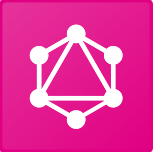
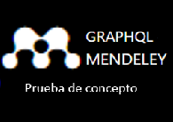

Importante: Esta página debe ser cargada unicamente después de proporcionar las credenciales de Elsevier mediante el botón "PROBAR API" que se encuentra en la página de inicio, si se accede mediante la url, no se garantiza la obtención del token, o se asume que no requiere la obtención del token de la misma manera si no da permiso de uso del token o si se edita la url inicial, generará un mensaje de error en las solicitudes a la API informando que el token es inválido
Usted ha proporcionado permiso de uso del token generado por medio de sus credenciales de Mendeley para hacer peticiones a la API GraphQL Mendeley, si por algún motivo no desea brindar este permiso puede eliminar el token. Puede usar GraphQL Playground (Desarrollador) o la prueba de concepto (Público general) disponibles para probar la API
Elija una de las herramientas
 